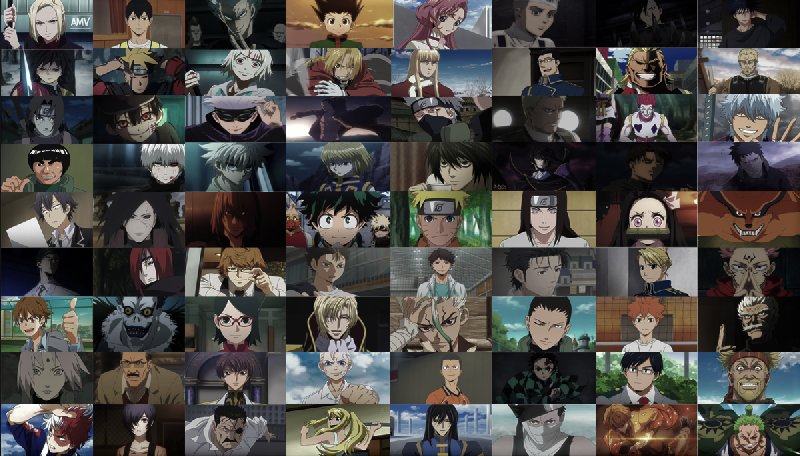

Vote for the best anime character

Naruto franchise is one of the most viewed anime in the history. This anime was in top 10 for more than 15 years. There is more than 100 important character in this anime of 720 episodes. From them, some characters are legendary and some of them are very disgusting. Some of them are incredibly sgrong and some are very weak. But, this all characters are what which have made Naruto a very successful anime.